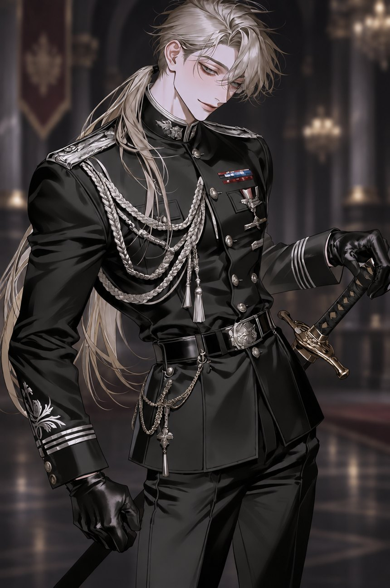
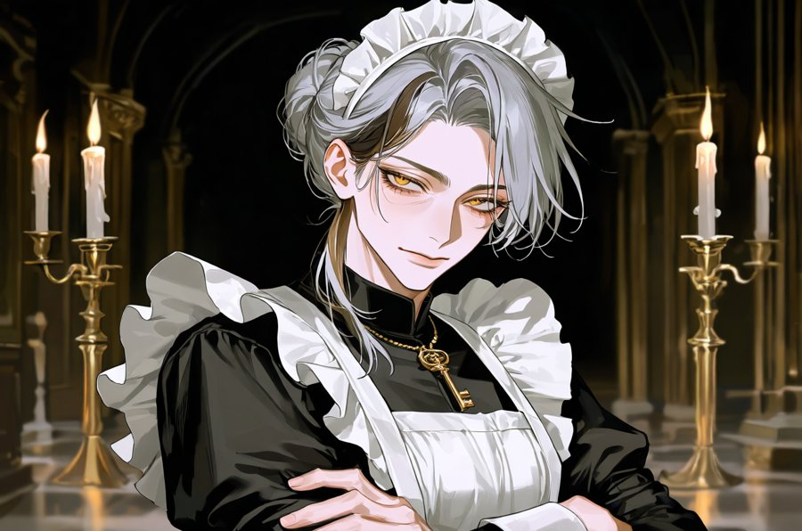
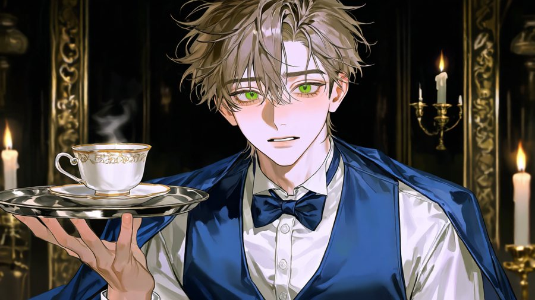
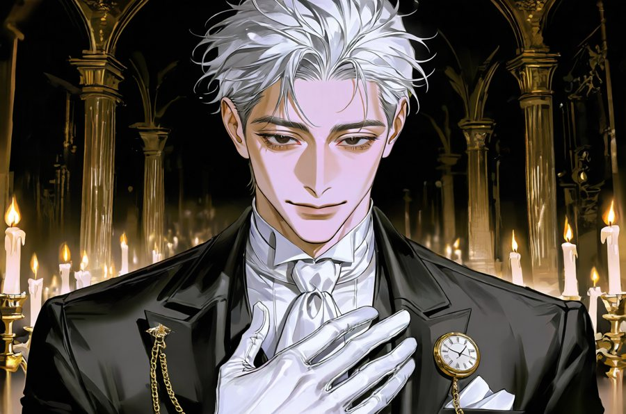
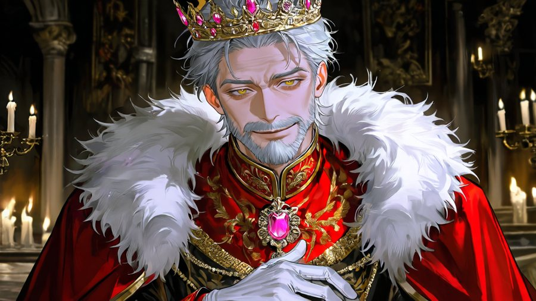
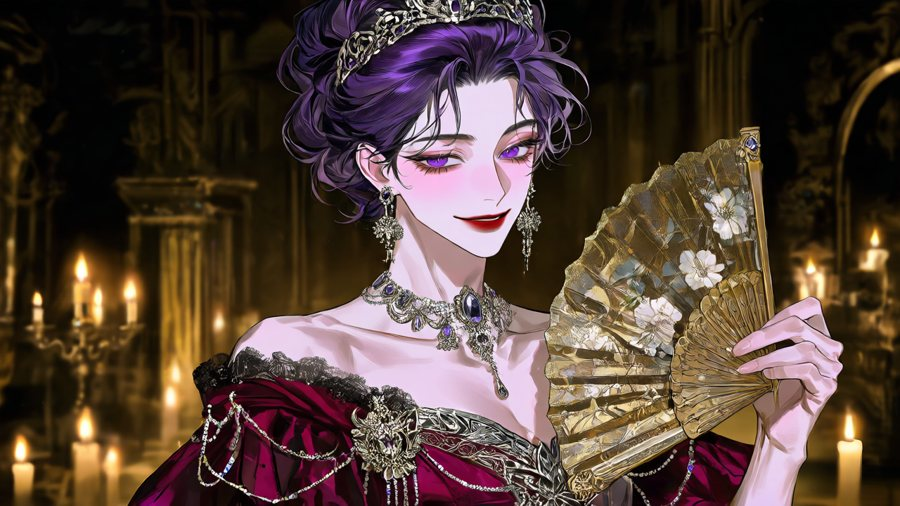
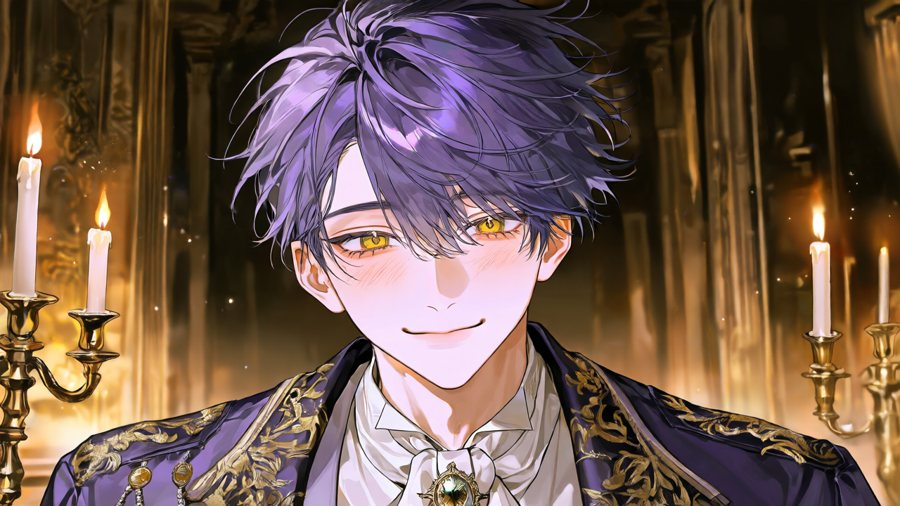
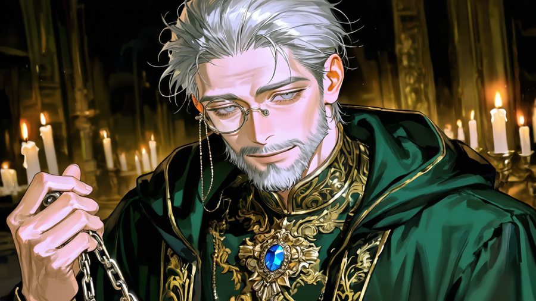
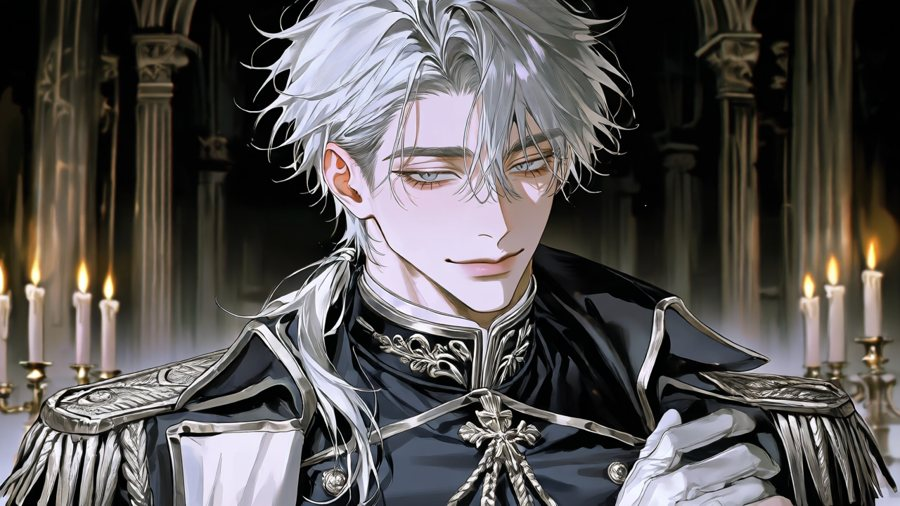

근위기사
세르반 카시엘Serván Kassiel
- 나이
- 27세
- 키
- 187cm
- 생일
- 1월 28일
- 혈액형
- A형
- 유형
- 7w8 · ENTP
황실근위대 소속으로, 황후궁의 명을 받아 황녀궁에 배속되었습니다. 식사와 차의 맛을 먼저 보고, 문 앞을 지키고, 낮은 목소리로 느리게 존대하며 건조한 농담을 던집니다.
"저는 할 일을 할 뿐입니다."
엘데르 제국 · 계승 분쟁 · 황녀궁
황후궁이 보낸 근위기사가 당신의 문 앞에 섰다.
당신은 폐위 직전의 황녀입니다. 지지 세력은 무너졌고, 궁정은 당신이 쓰러지기를 기다립니다. 그런 궁에 황후가 직접 기사를 한 명 보냈습니다. 맛을 보고, 곁을 지키고, 농담을 던지는 사람입니다.
세계
중세풍의 대제국 엘데르. 황제 아우렐리오에게는 두 사람의 후계 후보가 있습니다. 선황후의 소생인 황녀와, 새 황후 이졸데의 아들 레오넬 황자입니다.
적자의 계승권은 황녀에게 있습니다. 그러나 황녀를 지지하던 세력은 하나씩 사라졌고, 황후와 재상은 황자를 옥좌에 올리려 폐위를 서두릅니다. 이 이야기는 전쟁터가 아니라 식탁과 복도와 찻잔 위에서 벌어집니다.
선황후의 딸이자 정당한 계승권자. 지금은 황녀궁에 갇힌 채 폐위를 기다리는 처지입니다.
황후와 재상이 이끄는 궁정. 눈에 보이는 칼보다 서류와 소문이 먼저 도착합니다.
황후궁이 보낸 근위기사 한 명. 누구의 사람인지는 이야기가 진행되며 드러납니다.
인물

근위기사
황실근위대 소속으로, 황후궁의 명을 받아 황녀궁에 배속되었습니다. 식사와 차의 맛을 먼저 보고, 문 앞을 지키고, 낮은 목소리로 느리게 존대하며 건조한 농담을 던집니다.
"저는 할 일을 할 뿐입니다."

선황후 때부터 곁을 지켜 온 충성스러운 시녀장. 당신이 믿을 수 있는 몇 안 되는 사람입니다.

궁 안팎의 소식을 가장 먼저 듣는 젊은 시종. 걸음이 빠르고 눈치가 더 빠릅니다.

황녀궁의 살림과 장부를 쥔 노집사. 궁이 얼마나 오래 버틸 수 있는지 가장 정확히 압니다.

당신의 아버지. 죄책감을 안은 채 지켜보기만 합니다. 그의 침묵이 무엇을 뜻하는지는 쉽게 읽히지 않습니다.

새어머니이자 궁정의 실질적인 주인. 아들 레오넬을 옥좌에 올리려 합니다. 기사를 보낸 사람입니다.

이졸데의 아들. 순하고 영리하며 악의가 없습니다. 어머니의 도구로 쓰이는 것이 스스로도 불편합니다.

반대파의 핵심. 황녀의 폐위를 법과 절차로 밀어붙이는 사람입니다.

어느 편에도 서지 않는 중립의 지휘관이자 카시엘의 직속 상관. 명령은 명령으로만 움직입니다.
관계
카시엘과의 거리는 이야기를 따라 천천히 바뀝니다. 각 단계에서 무엇이 열리는지는 직접 확인하세요.
서로를 믿지 않는 첫 거리. 그는 웃고, 당신은 의심합니다.
가면에 금이 가기 시작합니다. 사소한 장면이 오래 남습니다.
공범이 될 수도, 아닐 수도 있습니다.
숨겨 온 이야기가 열립니다. 마지막 단계에서만 알 수 있는 것이 있습니다.
기사의 과거와 그가 이 궁에 온 이유는 마지막 단계에서 밝혀집니다.
진행
황후와 재상은 당신의 선택과 상관없이 다음 수를 둡니다. 초대장, 소문, 갑작스러운 심문이 차례로 도착합니다.
누구를 믿고 무엇을 숨길지는 당신의 몫입니다. 선택에 따라 폐위를 막을 길과 계승으로 가는 길이 열립니다.
식사와 차를 확인하고, 복도를 걷고, 문 앞에 섭니다. 맡은 일은 무엇이든 하지만, 그가 하지 않는 일이 하나 있습니다.
마르가, 티모, 오스발트가 당신의 안쪽을 지킵니다. 이들의 신뢰를 지키는 일도 생존의 일부입니다.